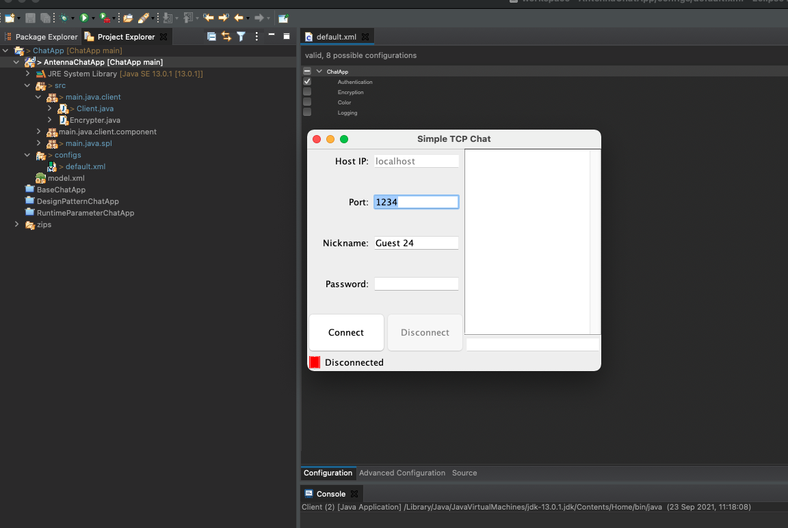

We have used the antenna preprocessing tool, by adding #if CONDITION ... #endif, we made sure to encapsulate each feature. A set of different combinations will be tested and the results will be shared in this document. For each manually test we made sure the config file and application are shown on the image for each test case. In the image shown there will be a selection panel for:
The app without any feature enabled
The app only with authentication enabled, should show login by password.
Showing encryption is hard so we enable logging to show it encrypts all communication and also showing the logging function. Keep in mind both can still be disabled seperatly but makes it harder to show the working logging function.
the logs are saved in a seperate log file see underneath.
The app only with color enabled, should show color feature dropdown.